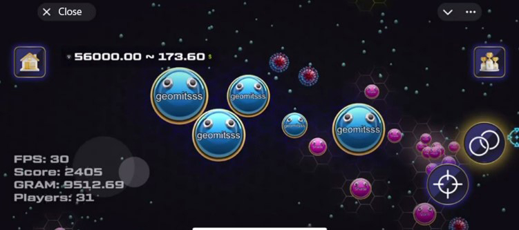
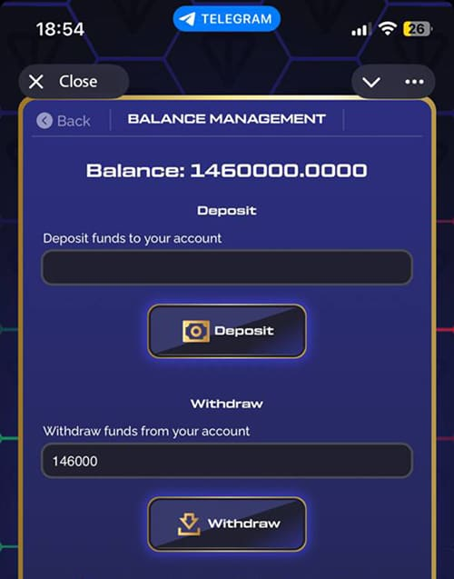
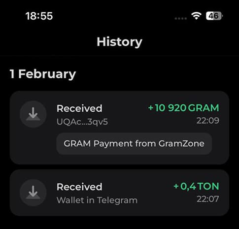
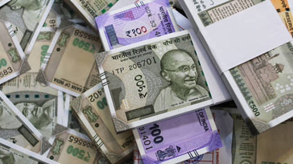

<section class="info__section">
    <div class="container">
        <div class="info__section-wrapper wrapper">
            <p class="text mb-23">
                <span class="bold">Gram Zone</span> - एक ऐसा खेल है जो दुनिया भर के हजारों लोगों के लिए एक वास्तविक खोज बन गया है। यह agar.io के समान है - 
                <span class="bold">आपको छोटे खिलाड़ियों को खाना होगा और अंक हासिल करने होंगे।</span> लेकिन एक महत्वपूर्ण विशेषता के साथ - यहां आप सिक्के (TON सिक्के पर आधारित ग्राम) एकत्र कर सकते हैं और
                <span class="bold">उन्हें वास्तविक पैसे में अपने वॉलेट में और फिर अपने कार्ड में निकाल सकते हैं।</span> 
            </p>
            <video src="img/video-main.mp4" class="info__img mb-23" controls autoplay muted loop></video>
            <!--  -->
            <p class="text mb-23">
                मैं दिल्ली का एक साधारण लड़का हूं. और पहले तो मुझे भी इस पर विश्वास नहीं हुआ। मुझे लगा कि यह कोई चाल है. लेकिन मैंने इसे जांचने का फैसला किया और Telegram एप्लिकेशन डाउनलोड किया - यह सबसे लोकप्रिय मैसेंजर है, जिसमें मिनी-एप्लिकेशन और गेम हैं। एप्लिकेशन एंड्रॉइड के लिए Google Play Market और IOS के लिए AppStore दोनों में उपलब्ध है। फिर मैंने एक खाता पंजीकृत किया, मुझे बस एक फ़ोन नंबर चाहिए। फिर, अनुप्रयोगों की खोज करते समय, मुझे यह गेम GRAM ZONE मिला और मुफ्त संस्करण खेलना शुरू कर दिया, बस सिक्के एकत्र करना और अन्य खिलाड़ियों को "खाना", मैंने अनुभव प्राप्त किया और न्यूनतम राशि एकत्र करने में कामयाब रहा (ग्राम वास्तविक सिक्के हैं जिन्हें एकत्र किया जा सकता है और जो आपके शेष राशि में जाते हैं, उन्हें आपके वॉलेट में वापस लिया जा सकता है और विनिमय किया जा सकता है, उदाहरण के लिए, डॉलर के लिए और फिर आसानी से आपके कार्ड में वापस ले लिया जा सकता है) भुगतान किए गए टूर्नामेंट में भाग लेने के लिए। इस तथ्य के लिए धन्यवाद कि मैंने खेल की रणनीति को समझ लिया, मैं बहुत जल्दी अन्य खिलाड़ियों से लड़ने और जीत हासिल करने में सक्षम होने लगा और मेरा संतुलन तेजी से बढ़ गया।
            </p>
            <div class="info__block mb-23">
                
                <div class="info__block-wrapper">
                    <p class="text mb-12">
                        सशुल्क टूर्नामेंटों में आप न केवल सिक्के एकत्र कर सकते हैं, बल्कि अन्य खिलाड़ियों को "खा" भी सकते हैं और उनके सभी सिक्के आपके पास चले जाते हैं!!!
                    </p>
                    <p class="text-subtitle mb-12">
                        <span class="bold red">और यहाँ यह है - पहला वास्तविक पैसा जो मैंने केवल खेलकर कमाया!</span>
                    </p>
                    <p class="text">
                        पहले तो मुझे डर लगा कि कहीं पैसे जल न जाएँ, और तुरंत निकालने की कोशिश की। और क्या? <span class="bold">निष्कर्ष ने तुरंत</span> काम किया! कुछ ही मिनटों में पैसा मेरे TON वॉलेट में आ गया। मैं व्यर्थ ही डर रहा था... काश मुझे यह गेम पहले मिल गया होता, तो मैं बहुत पहले ही अमीर हो गया होता!
                    </p>
                </div>
            </div>
            <p class="text mb-23">
                चौंक पड़ा मैं। मैंने तय कर लिया कि यह एक दुर्घटना थी. लेकिन उन्होंने खेलना जारी रखा और दिन-ब-दिन संतुलन बढ़ता गया। मैंने हर जगह खेला: 
                <span class="bold">काम पर जाते समय, दोपहर के भोजन के समय, बिस्तर पर जाने से पहले</span> 
                - आपको बस एक फोन चाहिए! कुछ हफ़्तों के बाद, मैंने अच्छी रकम निकाली और 
                <span class="bold">आख़िरकार बच्चों के लिए नए खिलौने खरीदे जिनका उन्होंने लंबे समय से सपना देखा था।</span>
            </p>
            <div class="info__block info__block-reverse mb-23">
                
                <div class="info__block-wrapper">
                    <p class="text mb-12">
                        तब मैं एक नया फोन खरीदने म 
                        <span class="bold">सक्षम हो गया</span> - इससे खेलना और भी सुविधाजनक हो गया और पैसे कमाना आसान हो गया। और बाद में मेरा जीवन नाटकीय रूप से बदल गया -
                        <span class="bold">मैंने अपने लिए एक कार खरीदी!</span>
                    </p>
                    <p class="text">
                        <span class="bold">एक सामान्य नौकरी में मैं वर्षों तक उस तरह का पैसा कमा सकता था...</span>
                    </p>
                </div>
            </div>
            <p class="text mb-15">
                मैं जानता हूं कि बहुत से लोग अब इसे पढ़ रहे हैं और सोच रहे हैं, "ठीक है, यह सिर्फ भाग्य है, मैं ऐसा नहीं कर सकता।" लेकिन मैंने बिल्कुल वैसा ही सोचा! मुख्य बात शुरू करना ह
                <span class="bold">मुफ़्त संस्करण आज़माएँ</span> 
                और देखें कि यह कैसे काम करता है। और यदि आप अधिक कमाना चाहते हैं, अनुभव प्राप्त करना चाहते हैं, विभिन्न रणनीतियों का उपयोग करना चाहते हैं, टूर्नामेंट में भाग लेना चाहते हैं और अपनी आय बढ़ाना चाहते हैं।
            </p>
            <p class="text mb-15">
                <span class="bold">आपके पास खोने के लिए कुछ नहीं है, लेकिन आप मेरी तरह अपना जीवन बदल सकते हैं।</span>
            </p>
            <p class="text mb-23">
                यहां मेरे खाते के स्क्रीनशॉट हैं:
            </p>
            <div class="info__block info__block-top mb-50">
                
                <div class="info__block-wrapper">
                    
                    <p class="text-subtitle">
                        <span class="bold red">क्या आप देखते हैं? यह असली पैसा है जो मैंने सिर्फ खेलकर कमाया है।</span>
                    </p>
                </div>
            </div>
            <hr class="divider">
        </div>
    </div>
</section>